Penguin HidenSeek Guide
Introduction
Penguin Hide n Seek is a cute game of penguins hiding and you are seeking. Larry wants you to go undercover and spy on the penguins. The lore starts with Cold war which is currently not implemented in 2009scape yet. Every week you are able to spy on ten penguins and Larry will reward you with either xp or money.
Locations
Penguins love hiding a variety of places all over 2009scape but Larry does give some advice to where you can find them.
| Larry's Clue |
Location |
Location Image |
Penguin Diguise |
| Located in the northern desert | Next to the Plateskirt store in Al-Kharid | 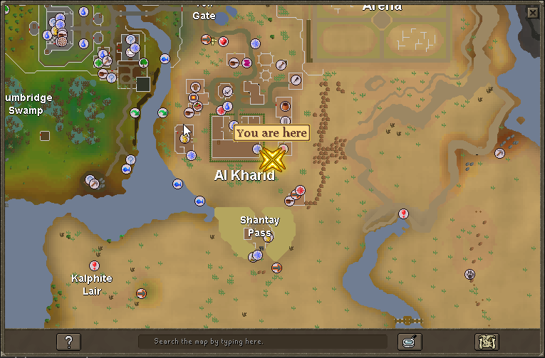 | 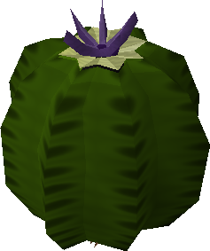 |
| located in the southern desert | In the Al-Kharid Desert just northwest of the Desert Mining Camp | 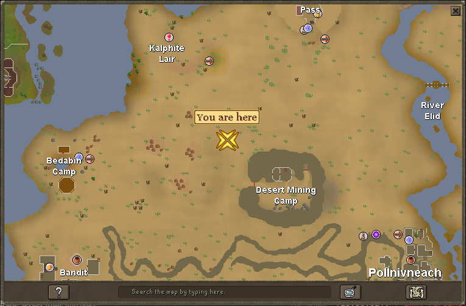 | |
| Located between Fremennik and barbarians | Just north of Barbarian Assault at Barbarian Outpost | 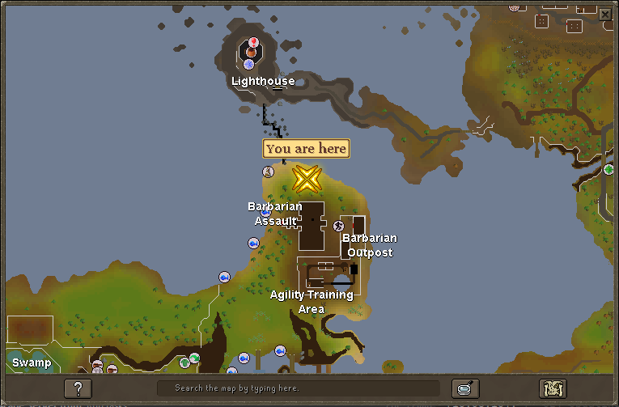 | 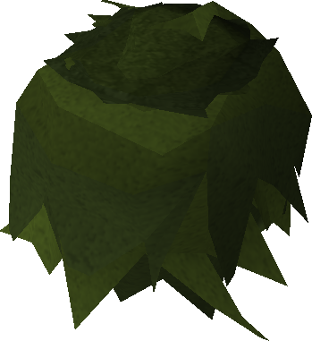 |
| Located where banana smugglers dwell | Near the Karamja Goldmine at its northwest corner | 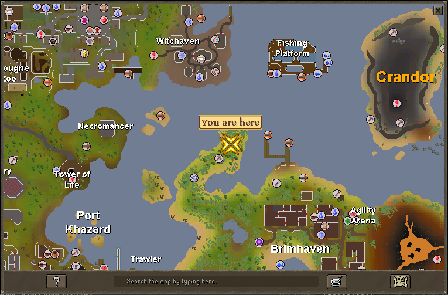 | |
| Located south of Ardougne | Outside of Castle Wars | 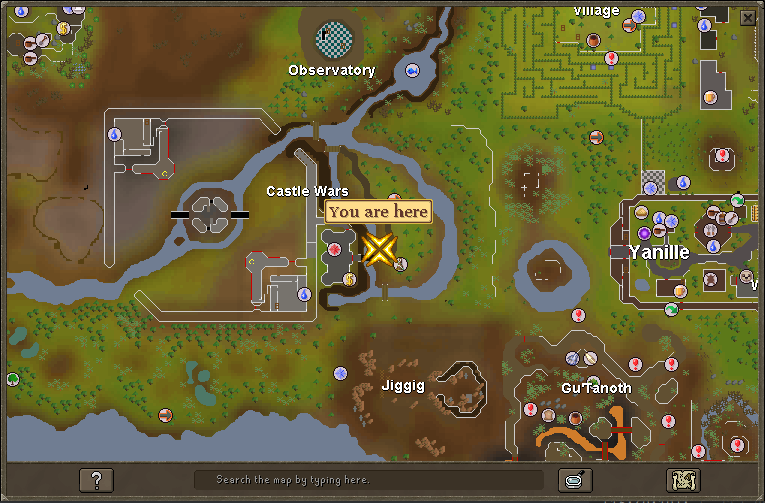 | |
| Located deep in the jungle | In the Karamja Jungle near Tai Bwo Wannai (fairy ring CKR) | 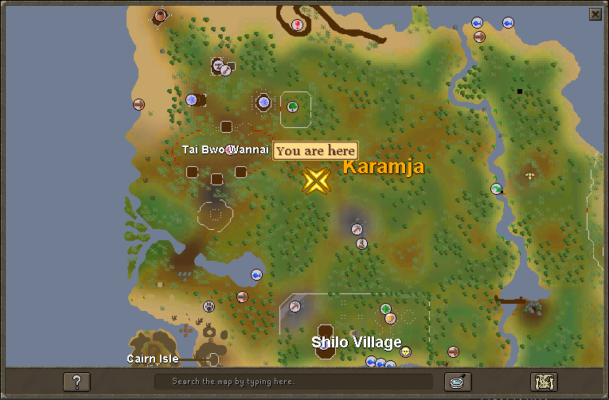 | |
| Located where eagles fly | North side of Eagle's Peak | 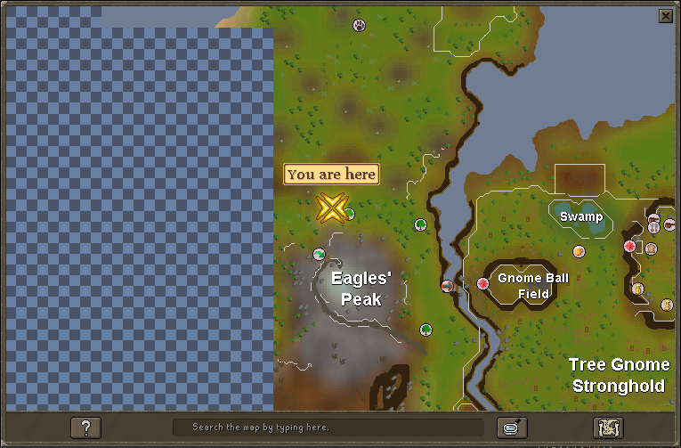 | |
| Located south of Ardougne | Inside the Tree Gnome Village maze between two benches | 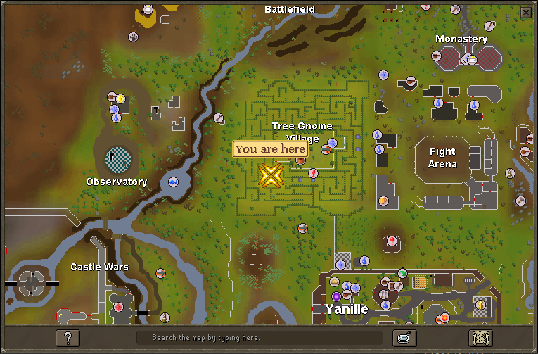 | |
| Located near a big tree surrounded by short people | West side of Tree Gnome Stronghold | 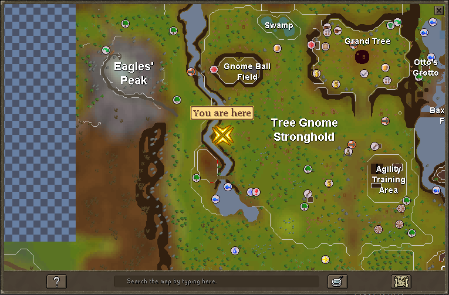 | |
| Located in the kingdom of Asgarnia | North side of Goblin Village | 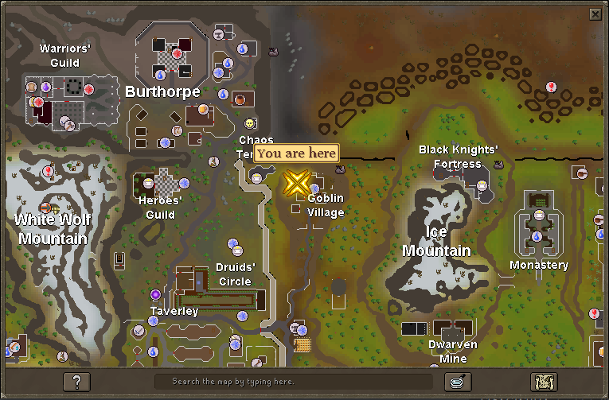 | |
| Located in the northern desert | Outside the Mage Training Arena (west side) | 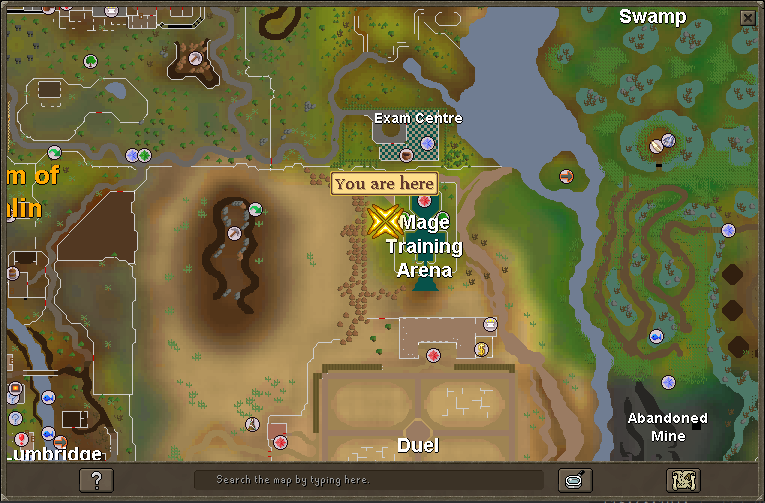 | |
| Located somewhere in the kingdom of Kandarin | Inside McGrubor's Wood (fairy ring ALS) | 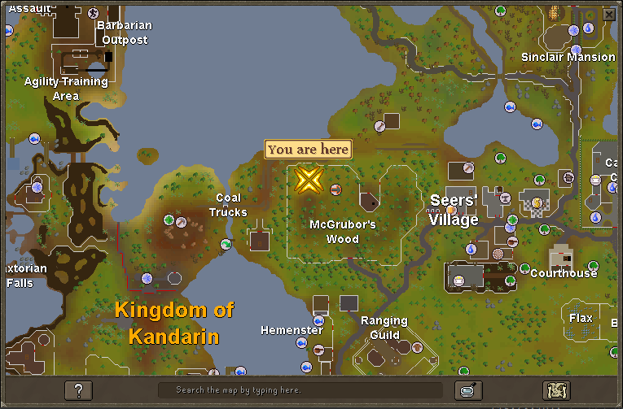 | |
| Located south of Ardougne | Just north of the Observatory | 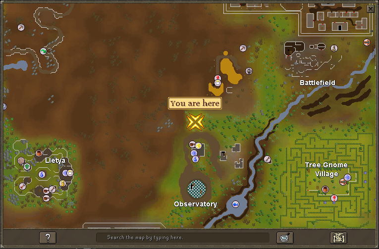 | |
| Located where wizards study | South side of the Wizards Tower (fairy ring DIS) | 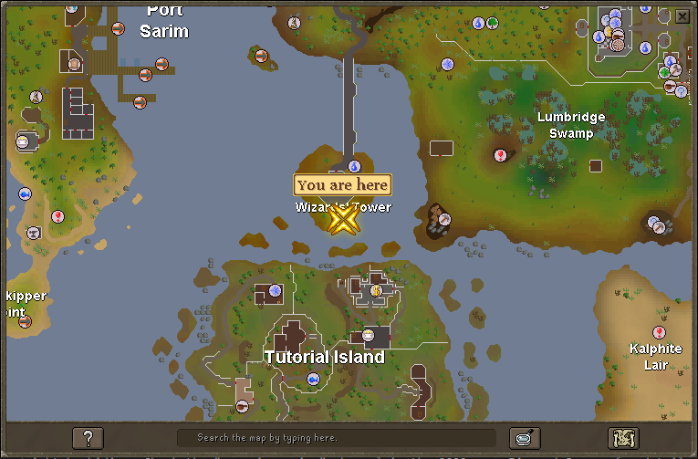 | |
| Located where the Imperial Guard train | Just north of the Warriors Guild in Burthorpe | 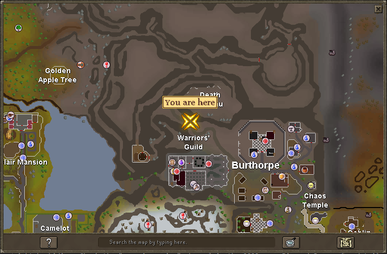 | 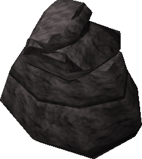 |
| Located in the kingdom of Misthalin | North side of the Digsite | 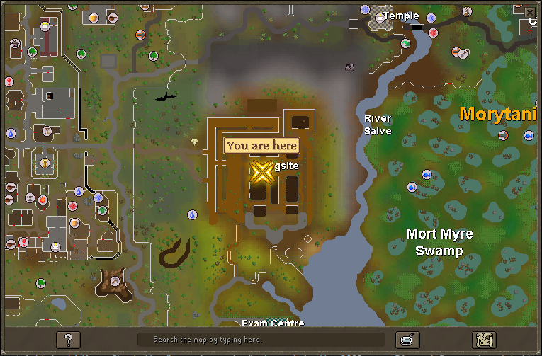 | |
| Located near some ogres | East side of Feldip Hills near where Rantz would be | 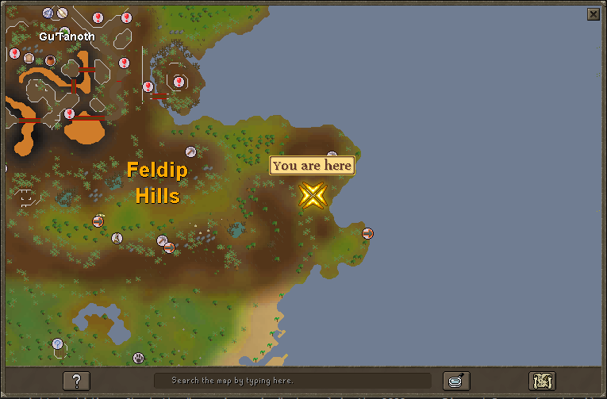 | |
| Located in the Kingdom of Asgarnia | Next to the Oracle on Ice Mountain | 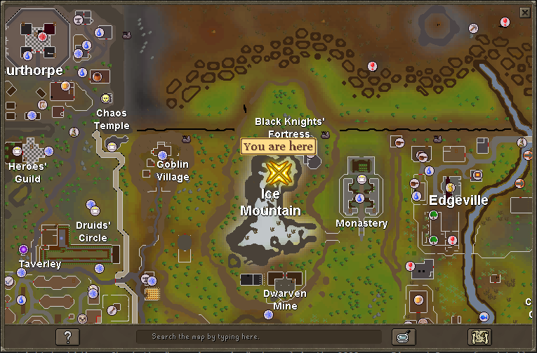 | |
| Located between Fremennik and barbarians | Just east of the Lighthouse (fairy ring ALP) | 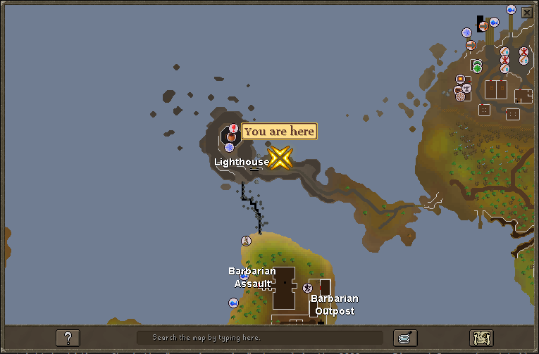 | |
| Located in the kingdom of Misthalin | At the front entrance to Draynor Manor | 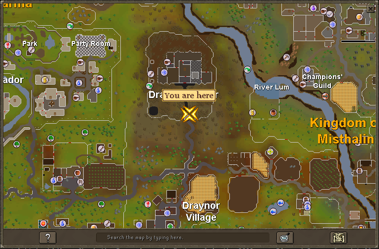 | 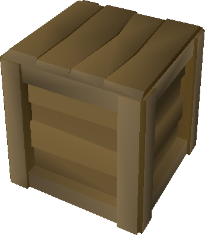 |
| Located in the Kingdom of Misthalin | In the Varrock Lumberyard | 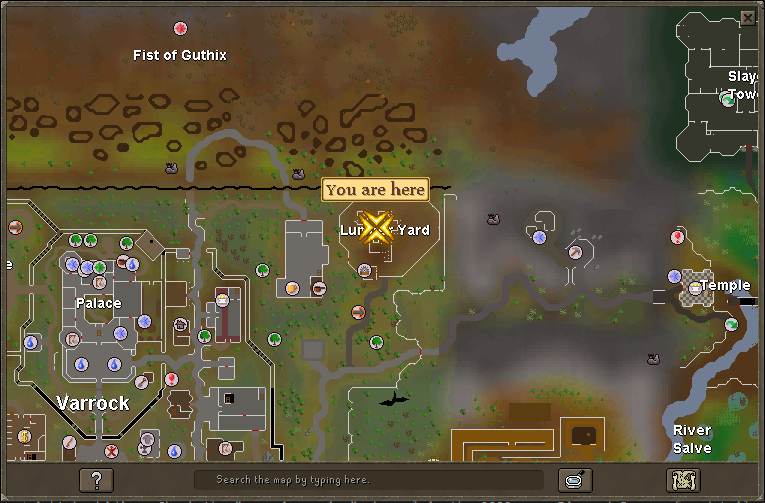 | > |
| Located where no weapons may go | The northwest tip of Entrana | 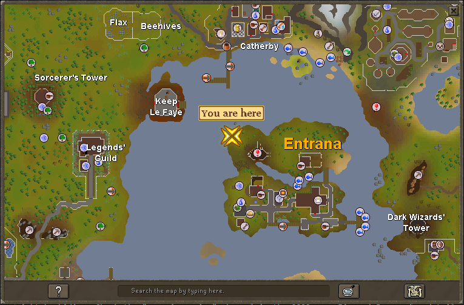 | 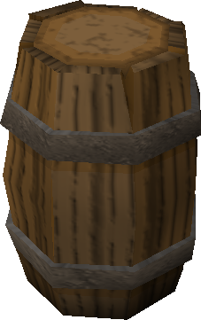 |
| Located in the kingdom of Misthalin | Outside of Father Urhney's hut in Lumbridge Swamp | 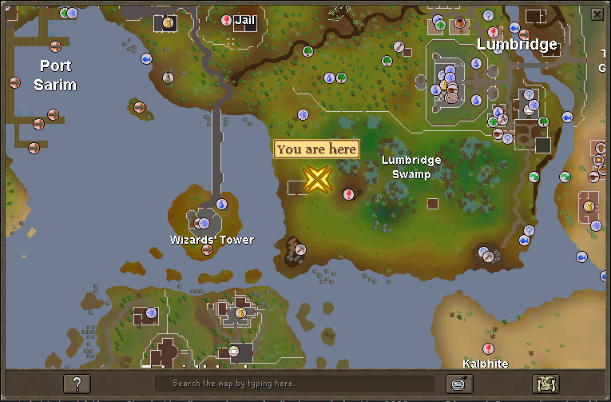 | 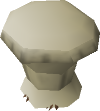 |
| Located in the fairy realm | Zanaris near the wheat mill | 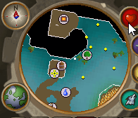 |
A special thanks to Pazaz for pulling the images for the penguins out of the cache
Note: If you see something not on this page that currently is in-game please let Summer know.